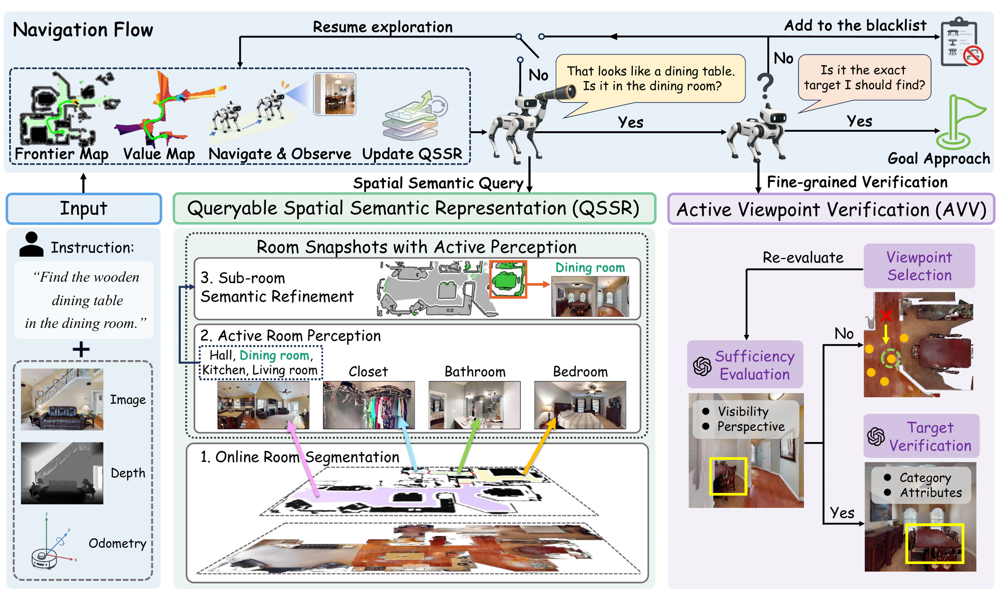
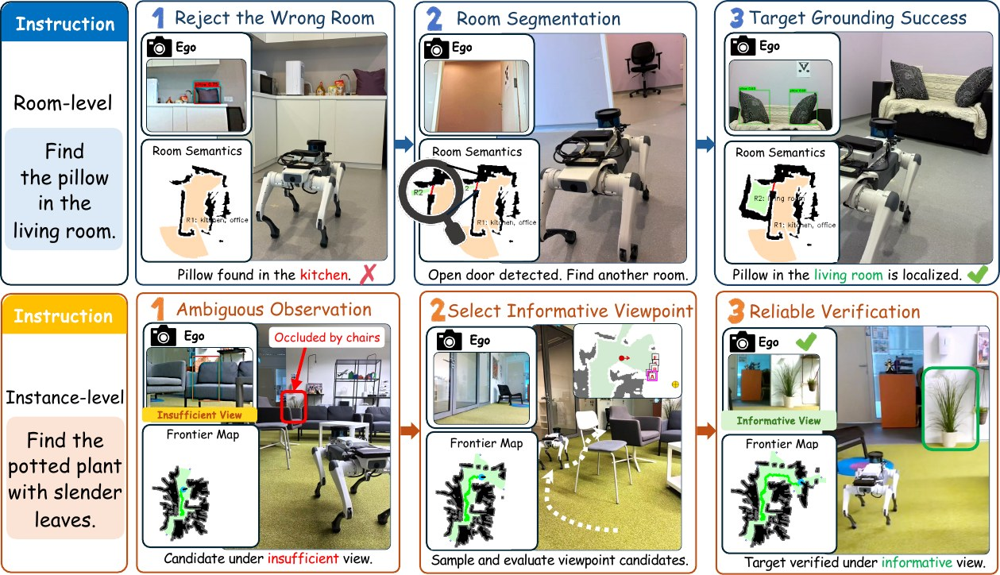

Abstract
Hierarchical open-vocabulary object navigation (OVON) requires agents to follow free-form instructions that may specify targets through scene-, room-, region-, and instance-level cues in unseen environments. Although recent work LangMap has formalized this setting, reliably solving it under partial observations remains challenging: spatial grounding requires persistent environment-level evidence, whereas target verification requires clear and discriminative candidate views. We present SAP-Nav, a fully online, zero-shot framework that addresses both requirements through active perception. SAP-Nav incrementally constructs a Queryable Spatial-Semantic Representation (QSSR) from actively acquired room views, enabling spatial semantic queries from any explored location. It further employs Active Viewpoint Verification (AVV) to assess whether the current observation provides sufficient evidence and, when necessary, reposition the agent to a more informative viewpoint before verifying candidates against category and attribute constraints. Although designed for hierarchical OVON, SAP-Nav supports both hierarchical and standard category-level OVON without task-specific training or precomputed scene maps. Experiments on LangMap and HM3D-OVON show that SAP-Nav achieves the overall best performance, including a 12.2% improvement in SR over training-based methods on region-level navigation. Real-world robot experiments further demonstrate its practical feasibility. Code will be made publicly available upon acceptance.
Method

Overview of SAP-Nav. Given egocentric RGB-D observations, odometry, and an instruction at any granularity, SAP-Nav operates through two active-perception modules: QSSR converts actively acquired online observations into a queryable spatial semantic representation, from room segmentation to sub-room semantics, and AVV closes the verification loop by assessing viewpoint sufficiency, actively repositioning to informative views, and verifying candidates against the goal category and attributes; rejected candidates are blacklisted and exploration continues.
Real-World Deployment

SAP-Nav executes hierarchical OVON instructions in indoor scenes on a quadruped robot. Room-level: a pillow found in the kitchen is rejected for mismatching the instructed room, and the target is localized in the living room. Instance-level: an ambiguous, occluded observation triggers viewpoint selection, and the potted plant with slender leaves is verified from an informative view.
Benchmark Results
| Method | VLM | Single-Goal | Scene | Room | Region | Instance | |||||
|---|---|---|---|---|---|---|---|---|---|---|---|
| SR↑ | SPL↑ | SR | SPL | SR | SPL | SR | SPL | SR | SPL | ||
| Training-based methods | |||||||||||
| PSL [ECCV'24] | – | 6.6 | 1.8 | 6.0 | 1.4 | 6.6 | 1.9 | 7.3 | 2.1 | 6.4 | 1.9 |
| SenseAct-M [CVPR'24] | – | 8.7 | 4.6 | 10.2 | 5.6 | 8.3 | 4.4 | 8.5 | 4.3 | 7.7 | 4.0 |
| MTU3D [ICCV'25] | – | 29.7 | 15.4 | 33.1 | 16.7 | 31.4 | 15.9 | 32.7 | 16.5 | 23.8 | 13.9 |
| Uni-NaVid [RSS'25] | – | 30.3 | 15.3 | 33.8 | 16.2 | 33.2 | 16.5 | 30.1 | 15.5 | 26.2 | 13.8 |
| PlaNaVid [arXiv'26] | Qwen2.5-VL-7B | 31.4 | 15.2 | 34.4 | 16.5 | 35.6 | 16.7 | 31.6 | 15.5 | 26.2 | 13.1 |
| Training-free methods | |||||||||||
| VLFM† [ICRA'24] | BLIP-2 | 12.8 | 7.5 | 16.9 | 9.7 | 15.3 | 8.9 | 11.6 | 6.7 | 9.9 | 6.1 |
| 3D-Mem [CVPR'25] | Qwen2.5-VL-3B | 15.3 | 2.8 | 20.7 | 3.7 | 20.3 | 4.0 | 13.4 | 2.3 | 10.2 | 1.8 |
| Qwen2.5-VL-7B | 21.2 | 8.7 | 21.3 | 8.4 | 18.8 | 8.1 | 21.7 | 8.8 | 22.7 | 9.2 | |
| SAP-Nav (Ours) | Qwen2.5-VL-7B | 29.4 | 11.2 | 28.8 | 9.4 | 30.1 | 10.7 | 33.6 | 12.1 | 25.1 | 11.7 |
| Qwen3.5-9B | 36.6 | 18.8 | 41.4 | 22.4 | 41.9 | 21.2 | 40.8 | 20.3 | 26.5 | 13.6 | |
| Qwen3-VL-235B-A22B-thinking | 39.6 | 19.9 | 43.7 | 22.5 | 47.7 | 23.7 | 43.8 | 21.4 | 26.8 | 14.0 | |
Evaluation on LangMap using concise descriptions. Single-Goal reports the average performance over all single-goal episodes. SAP-Nav achieves top-tier performance at all four granularity levels without task-specific training. VLFM† is re-run with its official implementation, prompted with granularity-specific goal information for frontier value estimation. On the HM3D-OVON val unseen split, SAP-Nav (GPT-4o) further attains 49.7 SR, the top-ranked success rate among all compared methods on standard scene-level OVON.
BibTeX
@article{pei2026sapnav,
title = {SAP-Nav: Spatial Semantic Representation Meets Active Perception for Hierarchical Open-Vocabulary Object Navigation},
author = {Pei, Xuetong and Liu, Jian and Munasinghe, Vidura and Miao, Bo and Tan, U-Xuan and Ding, Wenrui and Zhao, Na},
journal = {Under review},
year = {2026}
}